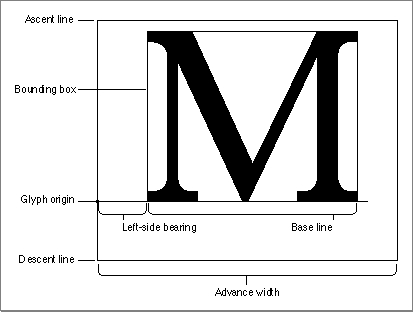
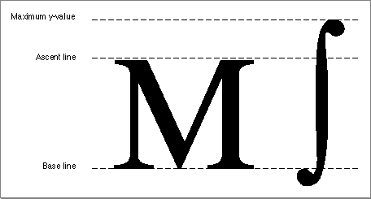
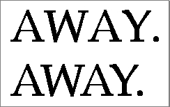

Font Measurements
Font designers use specific terms for the measurements of different parts of a glyph, whether outline or bitmapped. Figure 4-1 shows the terms used for the most frequently used measurements.Figure 4-1 Terms for font measurements

As shown in Figure 4-1, the bounding box of a glyph is the smallest rectangle that entirely encloses the pixels of the bitmap. The glyph origin is where QuickDraw begins drawing the glyph. Notice that there is some white space between the glyph origin and the visible beginning of the glyph: this is the left-side bearing of the glyph. The left-side bearing value can be negative, which lessens the spacing between adjacent characters. The advance width is the full horizontal measurement of the glyph as measured from its glyph origin to the glyph origin of the next glyph on the line, including the white space on both sides.
- Note
- The terms given here are based on the characteristics of the Roman script system, which is associated with most European languages and uses fonts that are meant to be read from left to right. Some other script systems use different definitions for some of these terms. However, QuickDraw always draws glyphs using the glyph origin and advance width measurement, even if the font is read from right to left.
If all of the glyph images in the font were superimposed using a common glyph origin, the smallest rectangle that would enclose the resulting image is the font rectangle.
The glyphs of a fixed-width font all have the same advance width. Fixed-width fonts are also known as monospaced fonts. In Courier, a fixed-width font, the uppercase "M" has the same width as the lowercase "i". In a proportional font, different glyphs may have different widths, so the uppercase "M" is wider than the lowercase "i". For example, the proportionally spaced text "iMaGe" has a different appearance from the fixed-width version of the same string "
iMaGe".Most glyphs in a font appear to sit on the base line, an imaginary horizontal line.
The ascent line is an imaginary horizontal line chosen by the font's designer that corresponds approximately with the tops of the uppercase letters in the font, because these are generally the tallest commonly used glyphs in a font. The ascent line is
the same distance from the base line for all glyphs in the font. The descent line is
an imaginary horizontal line that usually corresponds with the bottoms of descenders (the tails on glyphs like "p" or "g"), and it's the same distance from the base line
for every glyph in the font. The ascent and descent lines are part of the font designer's recommendations about line spacing as measured from base line to base line. All of
these lines are horizontal because Roman text is read from left to right, in a straight horizontal line.For bitmapped fonts, the ascent line marks the maximum y-value and the descent line marks the minimum y-value used for the font. The y-value is the location on the vertical axis of each indicated line: the minimum y-value is the lowest location on the vertical axis and the maximum y-value is the highest location on the vertical axis. For outline fonts, a font designer can create individual glyphs that extend above the ascent line or below the descent line. The integral sign in Figure 4-2, for example, is much taller than the uppercase "M". In this case, the maximum y-value is more important than the ascent line for determining the proper line spacing for a line containing both of these glyphs. You can have the Font Manager reduce such oversized glyphs so that they fit between the ascent and descent lines. See "Preserving the Shapes of Glyphs," which begins on page 4-31, for details.
Figure 4-2 The ascent line and maximum y-value

Font size (or point size) indicates the size of a font's glyphs as measured from the base line of one line of text to the base line of the next line of single-spaced text. In the United States, font size is traditionally measured in points, and there are 72.27 traditional points per inch. However, QuickDraw and the PostScript language define 1 point to be 1�72 of an inch, so there are exactly 72 points per inch on the Macintosh.Previously, the Font Manager required fonts to be less than or equal to 127 points in size, but this restriction no longer applies to any type of font. All bitmaps must fit on the QuickDraw coordinate plane; on a 72-dpi display device, fonts have an upper size limit of 32,767 points.
There is no strict typographical standard for defining a point size: it is often, but not always, the sum of the ascent, descent, and leading values for a font. Point size is used by a font designer to indicate the size of a font relative to other fonts in the same family. Glyphs from fonts with the same point size are not necessarily of the same height. This means that a 12-point font can exceed the measurement of 12 points from the base line of one line of text to the base line of the next.
Leading (pronounced "LED-ing") is the amount of blank vertical space between the descent line of one line of text drawn using a font and the ascent line of the next line
- Note
- The Font Manager does not force fonts that are specified as having a certain point size to be of that size. This can have an impact when laying out text in your application, so you need to take it into account. You may need to determine the actual height of the text that you are displaying by using the QuickDraw routine
MeasureText(which is described in the chapter "QuickDraw Text" in this book) rather than relying on the point size of the font.
of single-spaced text drawn in the same font. The Font Manager returns the font's suggested leading, which is in pixels, in theFontMetricsprocedure for both outline and bitmapped fonts. QuickDraw returns similar information in theGetFontInfoprocedure. Although the designer specifies a recommended leading value for each font, you can always change that value if you need more or less space between the lines of text in your application. The line spacing for a font can be calculated by adding
the value of the leading to the distance from the ascent line to the descent line of a single line of text.Although each glyph has a specific advance width and left-side bearing measurement assigned to it, you can change the amount of white space that appears between glyphs. Kerning is the process of drawing part of a glyph so that it overlaps another glyph. The period in the top portion of Figure 4-3 stands apart from the uppercase "Y". In the bottom portion of the figure, the word and the period have been kerned: the period has been moved under the right arm of the "Y" and the glyphs of the word are closer. Kerning data--the distances by which pairs of specified glyphs should be moved closer together--is stored in the kerning tables of the different font resources. The kerning table of the outline font resource is described on page 4-79. The kerning table of the font family resource is described on page 4-99.
Figure 4-3 Unkerned text (top) and kerned text (bottom)
